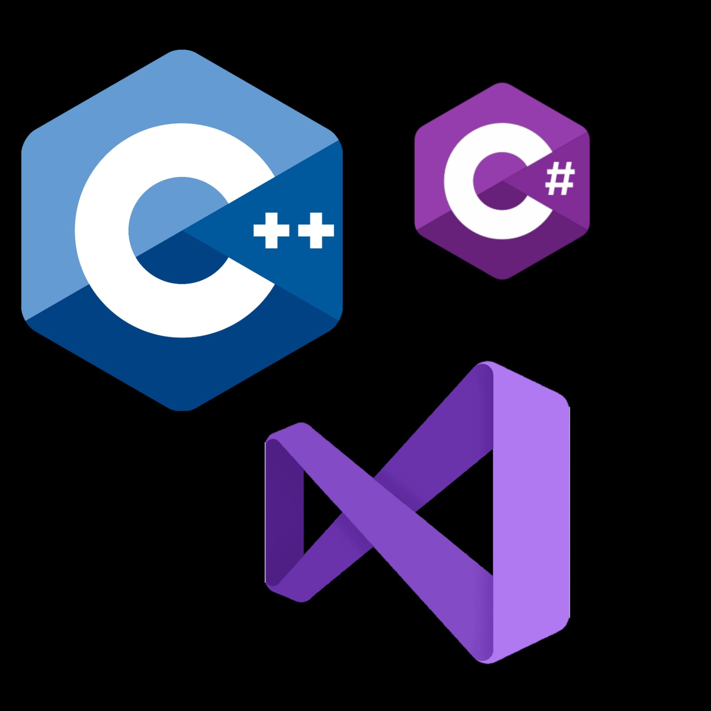
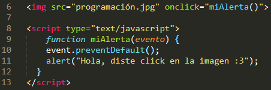
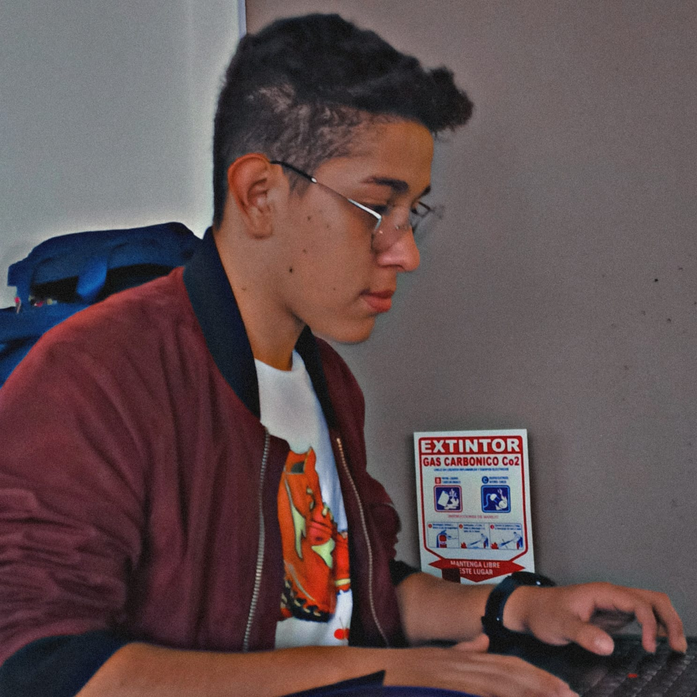

A continuación, se presentará un video con una breve explicación de como funciona la programación orientada a eventos en el lenguaje de JAVA.
Lenguajes que manejan P.O.E
Los lenguajes que se pueden manejar en el paradigma de Programación orientada a eventos en realidad son todos aquellos cuya función principal sean hacer aplicaciones, aplicaciones web, páginas web, etc. Es decir, aquellos sistemas de información que tengan contacto o uso de un usuario.
Ejemplo:
- JavaScript: Ya que se usa en animaciones y/o aplicaciones web.
- JAVA: Se usa tanto en Java aplication como en Java web.
- C++: Para aplicaciones o softwares locales
- Python: Para aplicaciones, desarrolloweb, logística y más.
- Visual Basic: Creación de aplicaciones como videojuegos y más.
- HTML con CSS: En las animaciones básicas como el :hover

Ejemplo práctico
A continuación presentaremos un ejemplo en lenguaje JavaScript para mayor entendimiento de este tema:

